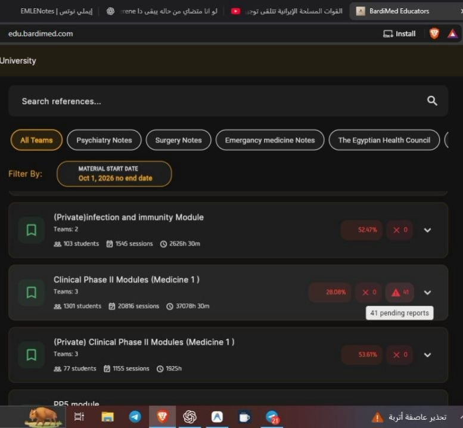
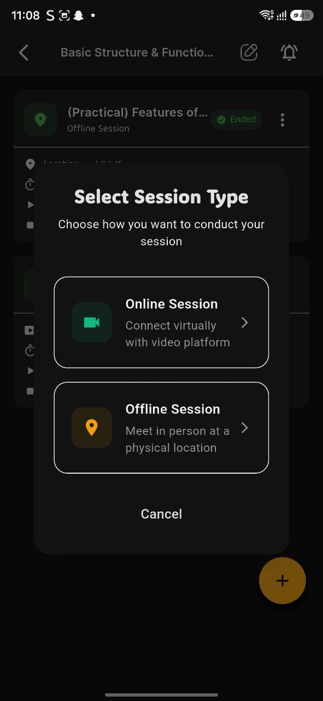
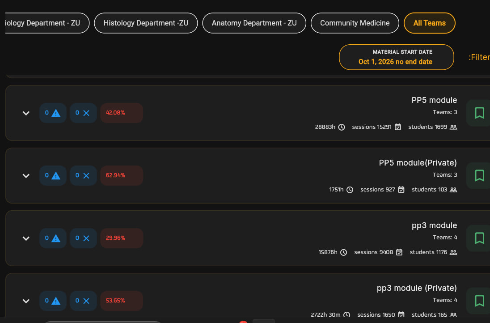

استيراد الجدول ومراجعته
رفع ملف Excel المعتمد ومراجعة المقررات والقاعات والمجموعات للتأكد من مطابقته للجدول المعتمد.
لوحة المنسق الأكاديمي لمتابعة التشغيل
يرفع المنسق الجدول، ويراجع تسجيل الجلسات والبلاغات، ثم يستخرج تقارير الإنذارات والحرمان من سجل واحد.
01 • صفحات الإدخال والتجهيز
يرفع المنسق ملف Excel المعتمد، ثم يراجعه مع جدول الكلية قبل إتاحته للمحاضرين والطلاب.
رفع ملف Excel المعتمد ومراجعة المقررات والقاعات والمجموعات للتأكد من مطابقته للجدول المعتمد.
ربط كل موديول بالأقسام المشاركة وتطبيق قواعد الإنذار والحرمان المعتمدة في الكلية.


02 • صفحات المراجعة العامة
يرى المنسق نسبة الغياب، والتزام تسجيل الجلسات، وعدد البلاغات المعلقة في مكان واحد.
عرض وضع الحضور والغياب لكل موديول وفرقة.
تمييز الجلسات المسجلة عن الجلسات التي تحتاج متابعة.
معرفة البلاغات التي لم يُرد عليها بعد.
لا يُستخرج التقرير قبل مراجعة التسجيلات والبلاغات.

03 • صفحات السجلات التفصيلية
يمكن الرجوع إلى الجلسة أو البلاغ لمعرفة ما حدث ومتى ومن تعامل معه.
يعرض الجلسات المسجلة للطالب، وتاريخ التسجيل، وطريقته، واسم المحاضر الذي سجّلها.
يعرض حالة كل بلاغ، ومن المفترض أن يرد عليه، ومن رد بالفعل، ومدة انتظاره.
04 • التقارير الجاهزة للقرار
بعد مراجعة تسجيل الجلسات والبلاغات، يخرج المنسق تقارير تساعد الأقسام وشؤون الطلاب على اتخاذ قرار واضح.
يوضح تسجيل الحضور والغياب في السكاشن التابعة لكل قسم.
يوضح من سجّل الحضور والغياب في الجلسات المسندة إليه، ومن يحتاج متابعة.
يعرض موقف كل طالب من الحضور والغياب بعد مراجعة البيانات والبلاغات.
أسئلة المنسقين والتعليم الإلكتروني
إجابات قصيرة عن متابعة الجدول والتسجيلات والبلاغات قبل التقارير.
تكامل الأدوار
تعرف كيف يترابط الجدول، وتسجيل الحضور، ومتابعة الطالب، ثم التقارير.
تتبّع العمل من استيراد الجدول حتى مراجعة البيانات والتقارير.
كيف يسجل عضو هيئة التدريس الجلسات ويرد على البلاغات.
الجدول، تسجيل الحضور، متابعة الغياب، والبلاغ الإلكتروني.
استيراد الجداول، متابعة التسجيلات والبلاغات، واستخراج التقارير.
نعرض مع فريقكم كيف يُرفع الجدول ويُراجع، وكيف تتحول البيانات إلى تقارير قابلة للاستخدام.